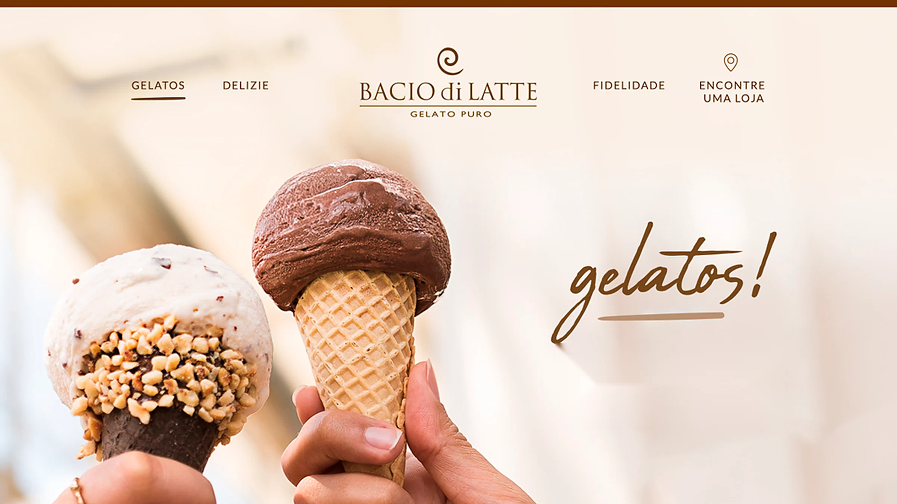
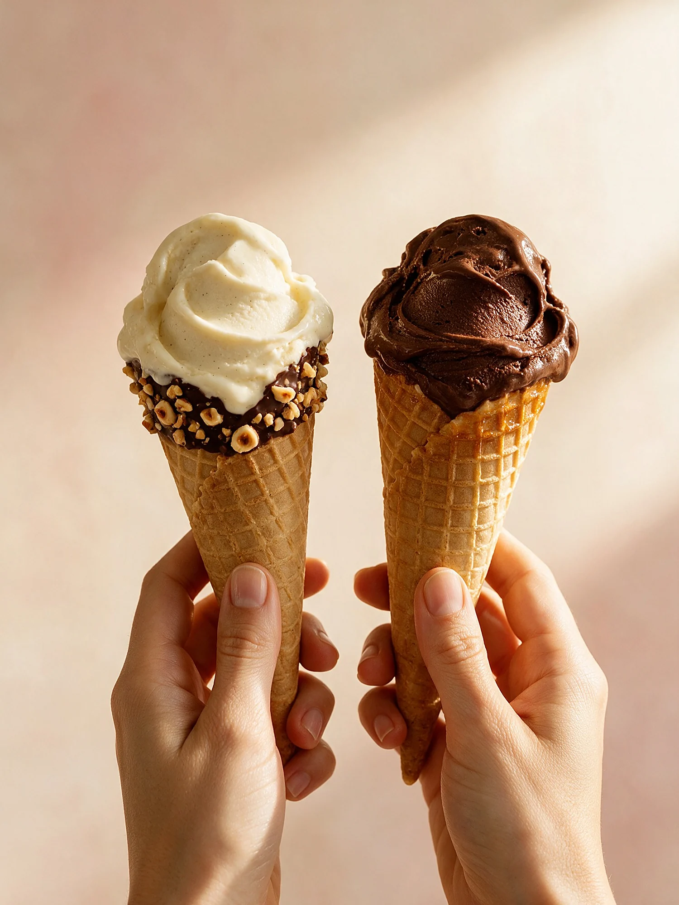
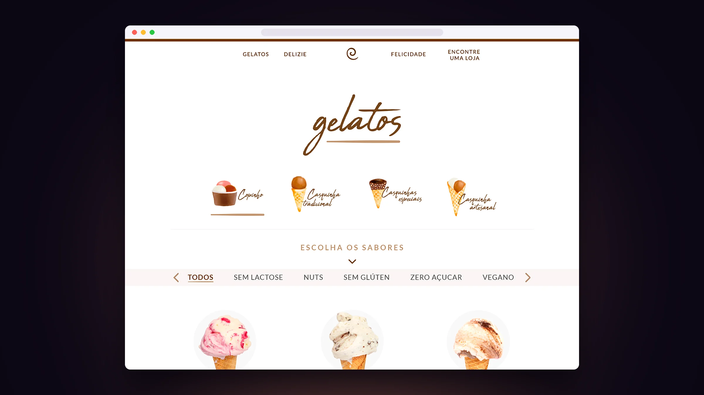
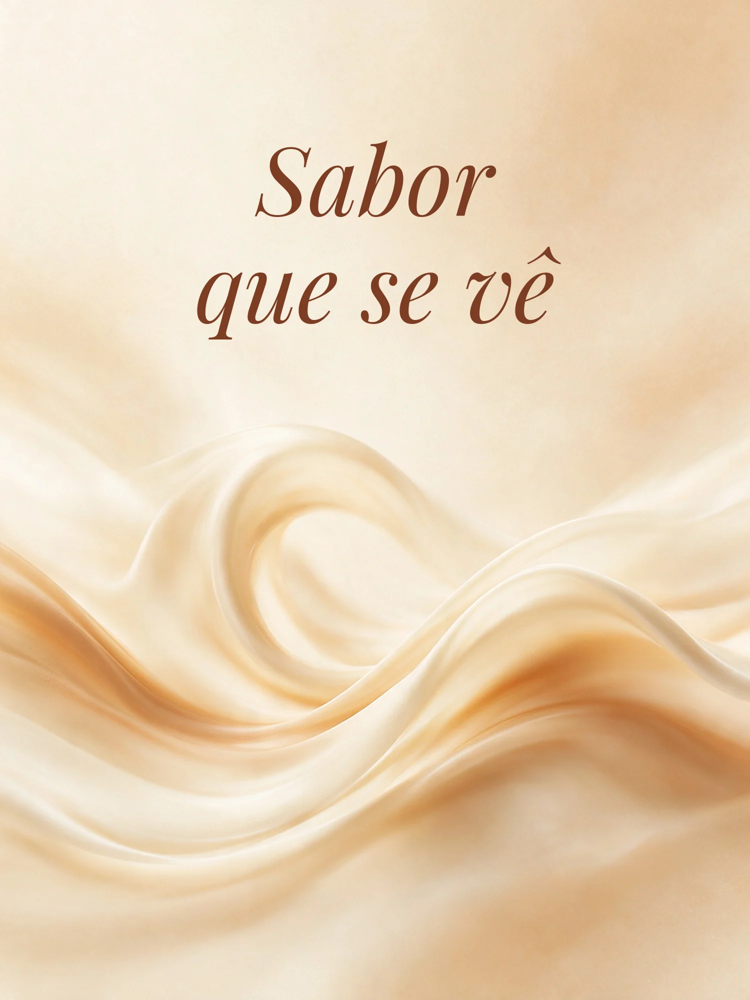
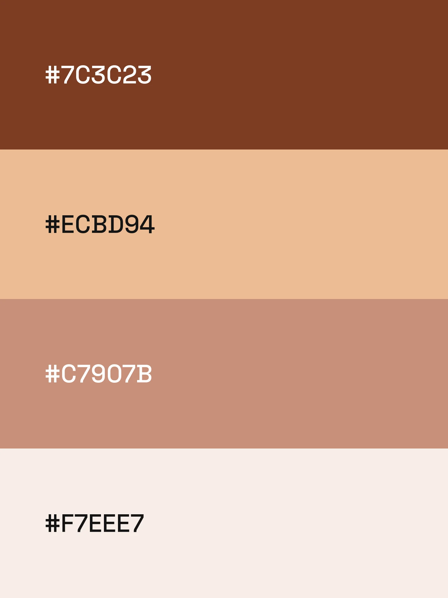

Bacio di Latte
A Bacio di Latte é uma gelateria de inspiração italiana e queria um site com a mesma delicadeza das lojas: bonito, leve e que desse vontade de provar cada sabor.
Criamos um site com fotos em destaque, cardápio de gelatos com filtros (sem lactose, sem glúten, zero açúcar, vegano), área de fidelidade e um atalho para encontrar a loja mais perto.
VER PROJETO NO ARServiços
- UI/UX Design
- Desenvolvimento de site
- Conteúdo visual

Home
Textura

Cardápio de gelatos

Próximo case
Linea Alimentos→